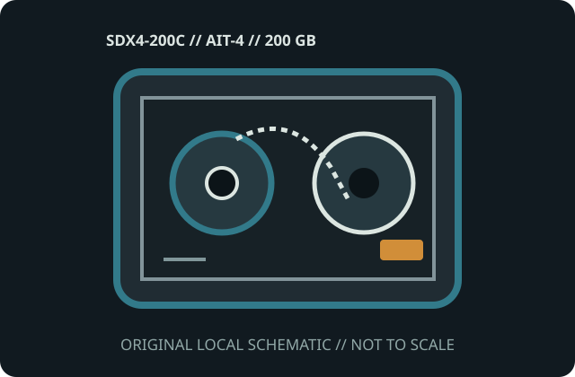

[ MODEL-SPECIFIC MEDIA // PRODUCT RECORD ]
Sony AIT-4 Data Cartridge (SDX4-200C)
This entry identifies the removable medium SKU, not its drive or dock. Confirm the exact model label, medium generation, host format and drive/dock compatibility before use.

IDENTIFICATION: Sony manufacturer SKU SDX4-200C; Advanced Intelligent Tape 4 (AIT-4), 8 mm AME data cartridge. Native capacity is distinguished from any data-dependent compression estimate.
Capacity, physical format and compatibility
| Manufacturer / SKU | Sony SDX4-200C |
|---|---|
| Medium / generation | Advanced Intelligent Tape 4 (AIT-4), 8 mm AME data cartridge; AIT-4; 8 mm Advanced Metal Evaporated magnetic tape in Sony MIC-enabled cartridge generation. |
| Native capacity | 200 GB native; up to 520 GB at a nominal 2.6:1 compression ratio only when data compresses. |
| Drive/dock compatibility | Sony AIT-4 drives that support SDX4-200C; verify exact drive and library documentation before attempting AIT-3 or later-generation use. Requires a Sony AIT-4-compatible drive. Later AIT generations may read/write earlier media only when documented by that precise drive; AIT is incompatible with LTO, DLT and DDS mechanisms. |
| Physical medium | Sealed compact 8 mm cassette with twin internal reels, leader, write-protect slider and MIC contact area; SDX4-200C is a rewritable 200 GB medium. |
| Electrical interface | No host bus or power connector on the cartridge. The tape drive handles transport and recording and contacts the MIC; SCSI/other host interface is part of the drive. |
| Format limits | 200 GB is native capacity; compression is workload-dependent. Cartridge generation, firmware and rewritable/WORM variant matter; shared 8 mm shell dimensions do not prove compatibility. |
Storage and preservation cautions
Keep in a clean case away from strong magnetic fields, dust, direct sun, moisture and heat; acclimatize before loading and do not touch tape or reels. Check data integrity, retain independent copies and document the drive/software used for migration.
- Do not force media into a drive/dock or use improvised cleaners, lubricants or repairs. Stop if the shell, connector, tape leader or disk enclosure is damaged.
- Preserve more than one independent copy, verify checksums after transfer, and document the drive/dock, firmware, OS and format used. Plan migration before compatible equipment is lost.
Manufacturer and archival sources
- Sony AIT cartridge product-line datasheet (archival copy)Archived Sony product literature identifies AIT generations and nominal media capacity.
- Sony — AIT Line-Up reference sheetSony-hosted legacy AIT media and drive family reference.
- Library of Congress — Care, Handling, and Storage of Audiovisual MaterialsArchival care guidance for magnetic tape.
Capacity labels, compressed ratings, and compatibility are model- and host-specific. Product references and exact drive/dock manuals take precedence over shell fit or a generic family name.